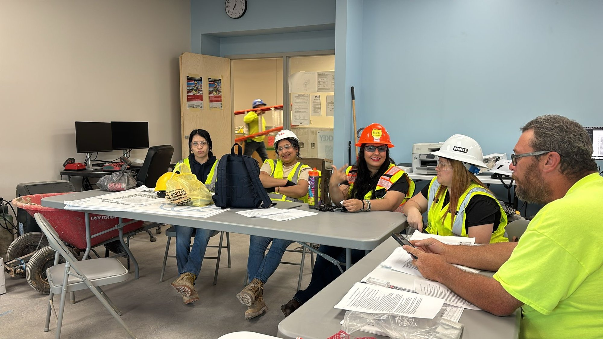

Facilities we serve.
We tailor our cleaning approach to each environment—prioritizing safety, consistency, and detail. Explore the markets below and contact us for a customized plan.

Clean, safe learning environments.
Educational environments require reliable and detailed cleaning to ensure safe, healthy spaces for students and staff. We apply structured protocols to maintain high hygiene standards.
- Classrooms
- Laboratories
- Gymnasiums
- Common areas
- Floor care and restroom sanitization
We follow strict safety and hygiene standards to support healthy learning environments.
See a School Project

Sanitization you can trust.
We support medical facilities with consistent deep cleaning and ongoing maintenance—helping teams meet high hygiene expectations and standards.
- Exam rooms, lobbies, offices, administrative areas
- Disinfection & sanitization procedures
Specialty and heavy-duty cleaning.
From post-construction cleanups to specialty projects, we scale our crew and process to match the job.
- Post-construction final cleaning
- Pressure washing
- Floor care
- FALTA COMPLETAR


Reliable cleaning for public spaces.
We provide cleaning services for public and institutional facilities of varying sizes, with an understanding of structured scopes of work and compliance-driven environments.
- Public Schools
- Municipal Buildings
- Clinics & Public Facilities
- Institutional Campuses
Our team follows professional standards and documentation practices required for public-sector projects.
Contact for Public Facilities